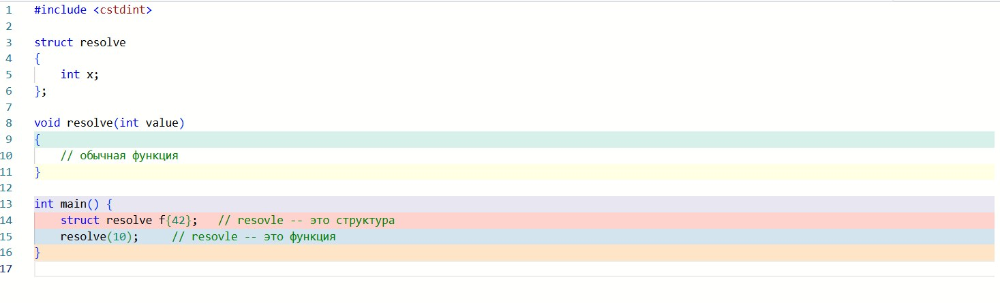
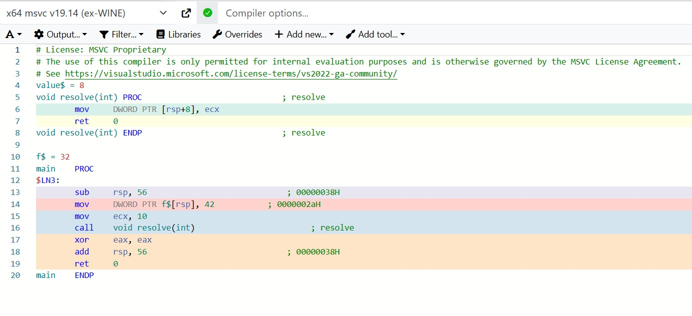
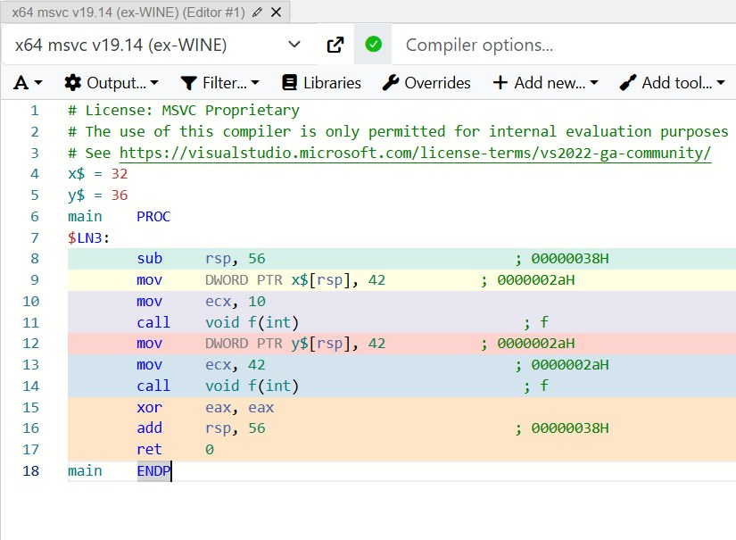

This is the seventh chapter of the PragmatiC++ draft — a book on pragmatic C++ that still makes sense a year later. The chapter source is open on GitHub.
There's an old joke about "what's the difference between an ordinary C++ programmer and a good C++ programmer"? The first writes code, the second can explain why it works.
It's a joke, of course, but these days not even every good programmer can explain how this or that piece of code works, or the internal logic that led to the final solution, without resorting to ultimatum phrases like "that's how it's written in the standard" or "that's how the compiler hacked it together."
At the center of everything that happens inside the compiler are two processes: name lookup and overload resolution, which we covered in the previous articles. And every time the compiler processes your code, it handles just two questions:
First: "What can this name even mean here?"
Second: "If there are several variants, which one is correct?"
If you understand how the compiler answers these questions, you'll understand how everything else works too — templates, concepts, overloads — it's all built on solving these two questions.
The big problems of small names
When you have several overloaded functions with one name, "in your head" it's perceived as "one function" — I've discussed this with colleagues, and even seasoned C++ folks perceive a set of overloads as "one" function. This isn't an accident — the standard's authors specifically aimed for this look to hide the complexity. The intentions, as always, are good: if it's called the same, it should do the same thing, right? Almost — the devil, as usual, is in the details...
void print(int x);
void print(double x);
void print(std::string x);We see the print function and think: "There's a print function that can print different things," and this is a useful abstraction imposed on us by the standard's authors, but for the compiler it's a different universe and for it these are three (3) different functions that happen to be called the same. And every time you write print(...), the compiler has to figure out which function exactly you meant, and it's precisely because we, humans, wanted to make life easier for ourselves that all the complications start here. Open any code, preferably not your own, because you know it, but someone else's, and find something like resolve(x);
Can you say what this is? Probably it's a function call — or maybe not; in fact the simple question "what is resolve()?" is rather hard for the compiler, and the compiler usually has several blocks of name analysis, because resolve could be:
// An ordinary function
void resolve(x) { std::cout << "Function\n"; }
resolve(x); // Function call// An object with an overloaded call operator
struct Callable {
void operator()(x) { std::cout << "Functor\n"; }
};
Callable resolve;
resolve(x); // operator() call// An object
struct resolve{
resolve(int x) { std::cout << "Constructor\n"; }
};
resolve(x); // Creating a temporary objectNow the compiler must first gather all possible variants of what resolve could be in the given context — this process is called name lookup — and then choose the right variant — this process is called overload resolution. And there's another case; now we'll have several constructors:
struct resolve {
int x;
static int y;
resolve() : x(1) {} // Default constructor
resolve(int val) { // Constructor with an argument
y = val;
}
};
int resolve::y = 0; // Initialization of the static fieldAnd code like resolve s{}; will now be a call to the default constructor, where we create an object s;
Let's return to the case where resolve() is an ordinary function:
int resolve(int x) { // An ordinary function!
return x + 1;
}Here we go... now if the compiler encounters a function with the same name, it will always be a call to a function, not a constructor of an object or anything else, because in C++ there's a rule (if it quacks — it's a duck): if something can be interpreted as a function call, it will be a function call. Whereas before resolve(2) was a constructor because there were no other variants, now the same notation has turned into a function call, and one and the same syntactic form starts working with different implementations and has different meaning depending on the context. Welcome to C++, as they say.
You can just write code that will work, now, on this compiler and under these conditions, but the problem is that sooner or later you'll write code, or take someone else's, that won't work, and the compiler emits a wall of logs at the error site. And without understanding how name lookup works, how overload resolution happens, you'll be poking at random, changing code until it compiles. But without understanding the scope of name lookup, you'll keep changing code in different places for a long time, not knowing that the compiler found the wrong overload. This is all aggravated by modern C++ with its pile of templates, concepts, the ADL and SFINAE bundles and everything else, but all of it depends only on the two questions from the start of the article: "what is this name and which variant of the name is correct."
Is the committee trying to make the language harder?
The meaning of any name in C++ depends very heavily on what's around it. If you just look at a name as isolated text, almost nothing will be clear — I call this the resolve(x) problem; look at any code and try to answer "what is resolve (conventionally, you can take any text)" while limiting yourself to just two lines above and below this definition. You most likely won't manage it, because the meaning of a name can only be understood through context — which functions, variables and logic stand above, below and next to it in the code.
If we try to repeat what the compiler does for such code (a classic example, dissected in the first or second year of university, if you were unlucky enough to start with C++ as your first language):
void resolve(); // function
struct resolve { // struct
resolve(int);
};
...
// bla-bla, lots of code
...
resolve s{42};then we get approximately the following:
- the compiler finds both variants: the function resolve and the struct resolve. The question arises: is resolve{0} an attempt to create an object with an argument, or somehow to "use" the function? The situation is generally obvious for us humans, but the compiler sees two entities and both fit — ambiguity, so the standard gives a very concrete rule for what to do in such a case: if a name can mean a function, then in the context of checking variants the compiler is first obliged to consider the function variant, and if it finds a function with that name, it's considered correct.
- The compiler sees resolve{42} and knows that a function resolve exists.
- It tries to parse resolve{42} as a notation related to a function
- → Either as the start of a function body (but you can't write a function body here)
- →→ Or as some expression with a pointer to a function (but now the syntax doesn't add up)
- From the standpoint of function syntax — it's an error
- We don't go further, because see point 1, and we don't even switch to considering struct resolve, simply issuing an error message.
<source>:11:5: error: must use 'struct' tag to refer to type 'resolve' in this scope
11 | resolve s{2};
| ^
| struct
<source>:3:6: note: struct 'resolve' is hidden by a non-type declaration of 'resolve' here
3 | void resolve(); // function
| ^Even if we have a struct resolve with a constructor from int that could handle this situation, the compiler simply doesn't get to it, because it's stopped by the standard's rule and the failed attempt to treat resolve as a function.
Problems with names
Now let's look at which entities can have the same name at all without a conflict. Here it's important to distinguish two things — the "coexistence" of names, when different entities can simply have one name (the example above), and overloading, when several entities of one "kind" (functions, for example) deliberately share one name, which often becomes a source of confusion.
Name overlaps aren't always considered a conflict, and the compiler distinguishes these entities perfectly if they belong to different categories: one is callable, the other is a type (godbolt):
struct resolve
{
int x;
};
void resolve(int value)
{
// an ordinary function
}
int main()
{
struct resolve f{42}; // resolve -- is a struct
resolve(10); // resolve -- is a function
}Here one and the same name resolve is used both as a type name and as a function name, but the context around it fully determines what exactly is meant, and the compiler has no problems resolving the ambiguity.


By the way, you can also do this:
struct resolve
{
int x;
};
void resolve(int value)
{
struct resolve resolve{42};
}
int resolve()
{
resolve(10); // resolve -- is a function
return 42;
}
int main() {
resolve();
struct resolve resolve{::resolve()};
}But such freedom doesn't always exist, and if you try to declare a namespace with a name that's already used for a function, the compiler will issue an error, because namespaces live in the same "category of names" as enumerations (enum) and functions, and here such ambiguity will be an error.
void kot()
{
}
namespace kot // error: name conflict
{
int x;
}
<source>(8): error C2757: 'kot': a symbol with this name already exists
and therefore this name cannot be used as a namespace nameNow the compiler can't decide whether kot is a callable entity or a container of names, so it forbids such code. For the same reason a namespace and an enum with the same name conflict with each other, i.e. a name must unambiguously point to one entity of its name level.
enum Kot
{
Vaska,
Murzik,
Murka
};
namespace Kot // error: name conflict
{
int Afigenariy;
}Here Kot is already taken by the enumeration, and you can't reuse it for a namespace, but re-declaring a namespace with the same name doesn't create a new entity, it just reopens the already-existing namespace and adds new names to it.
namespace Kot
{
int Murzik;
}
namespace Kot
{
double Murka;
}
namespace Kot // this isn't a new entity
{
void Tuguduk();
}
int main()
{
Kot::Murzik = 0;
Kot::Tuguduk();
}Unlike functions or variables, here there's neither overloading nor re-declaration, and it remains the same namespace — the standard makes an exception here. Now if we have several declarations with the same name that passed through the rules above and didn't cause analyzer errors, the compiler may consider this an overload, or a repeated declaration.
void log(int value);
void log(double value);
int main()
{
log(10); // calls log(int)
log(3.14); // calls log(double)
}Here the compiler will parse such code perfectly, because it sees two different sets of parameters and forms a set of overloaded functions, and only if the functions differ by return type will overloading not happen. From the language's standpoint this is considered a re-declaration of one and the same function, because the return type doesn't participate in overload selection. Welcome to C++, as they say.
int size();
double size(); // error: difference only in the return typeThat's not all, and the same const on a parameter passed by value also doesn't create a new overload, while by reference it does — but I won't get into that now, so as not to climb too deep into the weeds.
void f(int x);
void f(const int x); // this is the same declaration
int main()
{
int x = 42;
f(10);
const int y = 42;
f(y);
}
The same applies to default parameters, and different default values don't mean different functions — default parameters don't participate in forming overloads, they're merely substituted at the call stage.
void g(int x = 1);
void g(int x = 2); // re-declaration of the same function
int main()
{
int x = 42;
g(10);
}
<source>(4): error C2572: 'g': redefinition of default argument: parameter 1
<source>(3): note: see declaration of 'g'So we get this little set of rules:
Function + struct
-> OK: different name categories, the context differs.
Function + namespace
-> Not allowed: both entities participate in name lookup at the same level.
namespace + namespace
-> OK (exception): this isn't a conflict but a re-opening.
enum + namespace / function
-> Not allowed: the name must be unambiguous.If you think the committee folks sat around inventing edge cases, then no. The reason is much, much simpler, and behind it all stands the ancient idea of name mangling straight from the 80s (how the compiler encodes types into symbolic names), i.e. how the compiler turns a function's name and its signature into a string for the linker. The linker is conventionally "dumb" and isn't trained to understand anything but "hashes," and this too wasn't done just because, but for speed of work — otherwise even a small program would link for several minutes. For example:
void f(int);
void f(double);can turn into something like:
_Z1fi— f(int)_Z1fd— f(double)
So when we get to the linking stage, if two declarations give the same "mangled" name, the compiler considers that we're talking about one and the same entity. That's exactly why void g(int); and void g(const int); give the same mangled identifier, and it's one declaration rather than an overload, whereas different parameters (by type) give different mangled names and are considered an overload. Here we've come to the rules of name lookup, which I'll try to cover in the next chapter. Come along — it'll be terribly interesting, or at least not boring.